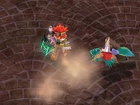

目次 > ゲームについて > 日本Falcom 攻略 > ZWEI II > G-コロッセオ > 純粋少年杯
らんの眼
ZWEI II (ツヴァイ 2、ZWEI II Plus)
| 概要 | 情報 | 攻略チャート |
| フード交換 | ペットについて | ボス戦 |
| 敵キャラ一覧 | ハンターランク | G-コロッセオ |
| アイテム一覧 | ガジェット一覧 | トレジャー一覧 |
| ダンジョン一覧 | クリアデータ特典 | Plusの追加要素 |
| ZWEI II攻略へ | 目次へ戻る |
| ポックル |
| 前作の「突進してチクチクやるだけ」の使えないキャラクターという肩書きはまだ返上できそうにないのですが、安全に攻撃できるスキが短いのでラグナだと少し戦いにくい相手です。 アルウェンならば一方的に攻撃できるので、そうでもありません。 まず、前作でもおなじみの突進。突進する前に一歩後ろに下がるのですぐに分かります。 そしてツープラトンでおなじみの動き。ぐるぐる回転しながら追いかけてくるのですが、動きが遅いので簡単によけられます。 この攻撃中は魔法が利かないようなので、アルウェンの場合はひたすら逃げた方がいいでしょう。 さらに、剣を使った連続攻撃。射程が短いためか、常に間合いを取っていると滅多に使ってきません。  攻撃以外にも、素早い動きで距離を詰めたり、距離を広げたりする行動があります。しかし、この行動の後に間髪入れずに攻撃を仕掛けることはないので、あまり意味はなさそうです。 |
| 概要 | 情報 | 攻略チャート |
| フード交換 | ペットについて | ボス戦 |
| 敵キャラ一覧 | ハンターランク | G-コロッセオ |
| アイテム一覧 | ガジェット一覧 | トレジャー一覧 |
| ダンジョン一覧 | クリアデータ特典 | Plusの追加要素 |
| ページの上部へ | ZWEI II 攻略へ | 目次へ戻る |